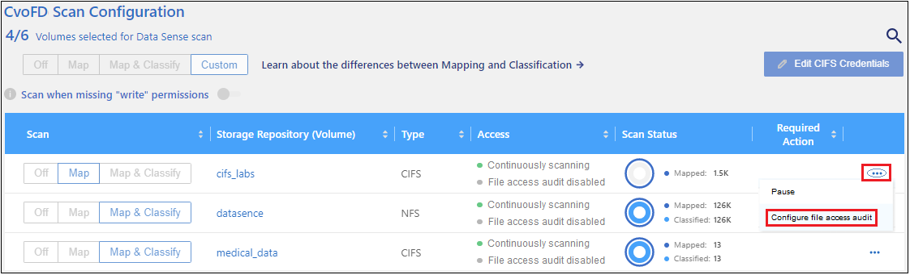
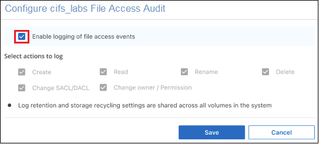
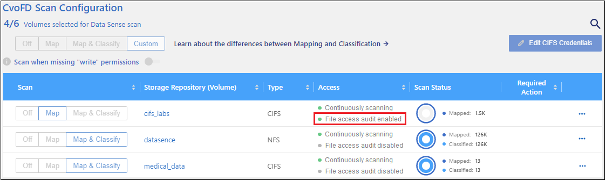
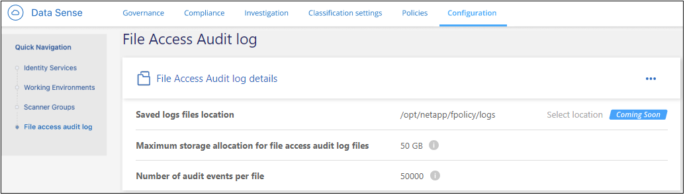

版本資訊
版本資訊
監控及管理檔案存取事件
 建議變更
建議變更
您可以設定 BlueXP 分類、以便在存取或變更您要掃描的其中一個檔案時、將事件記錄到檔案中。然後、您可以檢視此記錄檔的內容（檔案存取稽核記錄）、或下載該記錄檔、以查看發生了哪些檔案變更、以及由誰進行變更。
例如、如果您想要追蹤對敏感人事檔案或薪資檔案所做的任何變更、您可以在這些檔案所在的磁碟區上啟用此功能。接著您可以檢視檔案存取稽核記錄、查看這些檔案是否已變更。如果變更了這些項目、您就能看到進行變更的人員的安全識別碼（ SID ）、以及變更的時間。
您可以在工作環境中執行 ONTAP 軟體的任何關鍵磁碟區上啟用此功能。在磁碟區上啟用時、會追蹤磁碟區中所有檔案和目錄的檔案存取事件。這項功能是以為基礎 "FPolicy 功能" 從您的 ONTAP 系統、它會使用 BlueXP 分類系統做為 FPolicy 伺服器、從 ONTAP 接收通知訊息（事件）。BlueXP 分類可處理 ONTAP 每秒約 990 個事件。

|
2023 年 12 月（版本 1.26.6 ）版本暫時移除啟動稽核記錄收集的選項。 |
BlueXP 分類目前會擷取檔案和目錄上下列動作的事件：
-
建立
-
讀取
-
寫入
-
重新命名
-
刪除
-
變更擁有者 / 權限
-
變更 SACL/DACL （存取控制清單（ ACL ）變更）
具有「帳戶管理員」或「工作區管理員」角色的 BlueXP 使用者、可以設定磁碟區來進行檔案存取稽核記錄、並可檢視及下載稽核記錄。具有「 Compliance Viewer 」角色的使用者只能檢視及下載稽核記錄。
支援的資料來源
BlueXP 分類可記錄位於下列資料來源中 ONTAP 磁碟區上之檔案的檔案存取事件：
-
內部部署 ONTAP
-
Cloud Volumes ONTAP
-
Amazon FSX for NetApp ONTAP 產品
資料來源必須執行 ONTAP 9.11 版或更新版本的軟體。
設定磁碟區以進行檔案存取稽核記錄
您可以在個別磁碟區上啟用檔案存取稽核記錄、以追蹤檔案和目錄的變更。

|
您目前可以在每個資料來源上最多 8 個磁碟區上設定檔案存取稽核。 |
-
您應該為資料來源設定 Active Directory 、以便 BlueXP 分類可以列出存取檔案的人員 ID 。
-
必須開啟連接埠 5018 、才能從 BlueXP 分類系統進行輸出存取。
-
從資料來源的「 _Scan 組態 _ 」頁面、按一下
 針對該 Volume 、選取 * 設定檔案存取稽核 * 。
針對該 Volume 、選取 * 設定檔案存取稽核 * 。
-
在 _ 設定檔案存取稽核 _ 對話方塊中、按一下 * 啟用檔案存取事件記錄 * 的核取方塊、然後按一下 * 儲存 * 。
請注意、目前預設會選取所有可能的記錄動作、這些動作不可編輯。

-
您會發現該磁碟區現在已啟用檔案存取稽核。

為啟用的磁碟區上的檔案所產生的任何檔案存取事件都會新增至記錄檔。偶爾查看記錄檔、查看您正在接收的事件類型。
記錄檔內容
系統會為您設定用來追蹤檔案存取事件的每個磁碟區建立記錄檔。記錄檔的名稱為「 <volume_name> _ <volume_uuid> _ .log 」、例如「 fpolicy_CIFS_838c1727-dd2d-11ed-a3ec-590ce4991.log 」。稽核記錄中的每一行都包含下列格式的資訊：
-
時間戳記 - 事件的日期和時間
-
用戶端 IP - 執行檔案作業的執行個體 /PC/Proxy IP 位址
-
Volume Name （ Volume 名稱） - Volume 的名稱
-
Volume UUID - 磁碟區的 UUID
-
檔案類型 - 檔案類型：檔案或 DIR
-
檔案大小 - 檔案大小（以位元組為單位）
-
路徑 - 受影響檔案或目錄的完整路徑和名稱
-
Volume Type - Volume 類型： SMB 或 NFS
-
使用者 ID - 執行動作之人員的安全性識別碼（ SID ）
-
檔案擁有者 ID - 檔案擁有者的安全性識別碼（ SID ）
-
事件類型：建立、讀取、寫入、重新命名、刪除、 變更擁有者 / 權限、或變更 SACL/DACL
-
行動詳細資料 - 已完成的工作：取決於行動
例如、記錄檔中的下列行顯示「 Create 」（建立）動作已發生在「 fpolicy_CIFS 」磁碟區中、磁碟區中已建立新的檔案「 F14 」。
{"Timestamp": "2023-04-24 13:57", "Client_IP": "172.31.14.35", "Volume_Name": "fpolicy_cifs", "Volume_UUID": "838c1727-dd2d-11ed-a3ec-590ce4991", "File_Type": "FILE", "File_Size": 100, "Path": \\FPOLICY_CVO\fpolicy_cifs_share\dbs\f14, "Volume_Type": "SMB", "User_ID": "S-1-5-21-459977447-2546672318-3630509715-500", "File_Owner_ID": "S-1-5-32-544", "Event_Type": "CREATE", "Action_Details": {details}}
您可以使用 BlueXP 分類調查頁面來搜尋磁碟區（使用「儲存儲存庫」篩選器）或檔案（使用「檔案 / 目錄路徑」篩選器）、以查看受影響磁碟區和檔案的詳細資料。
存取檔案存取稽核記錄檔
檔案存取稽核記錄檔位於 BlueXP 分類機器上的： /opt/netapp/fpolicy/logs
依預設、每個檔案最多可包含 50 、 000 個事件。 您可以在「檔案存取稽核記錄組態」頁面中自訂此值。 達到此上限後、記錄檔中較舊的項目會被覆寫。
預設會將目錄中所有記錄檔的總大小設為最大 50 GB 。 您可以在「檔案存取稽核記錄組態」頁面中自訂此值。 達到此限制時、會在新增記錄檔時刪除最舊的記錄檔。此外、任何超過 14 天的記錄檔都會被覆寫、因為這是最大保留時間。
當 BlueXP 分類安裝在內部部署的 Linux 機器上、或部署在雲端的 Linux 機器上時、您可以直接瀏覽至記錄檔。
當 BlueXP 分類部署在雲端時、您需要 SSH 至 BlueXP 分類執行個體。您可以輸入使用者和密碼、或使用您在安裝BlueXP Connector期間提供的SSH金鑰來SSH到系統。SSH命令是：
ssh -i <path_to_the_ssh_key> <machine_user>@<datasense_ip> * <path_to_the_ssh驗證金鑰>= ssh驗證金鑰的位置 * <machine_user>：
+
對於AWS：使用<EC2-user>
Azure：使用為BlueXP執行個體建立的使用者
** GCP：使用為BlueXP執行個體建立的使用者
-
<datasense_ip> = BlueXP 分類虛擬機器執行個體的 IP 位址
請注意、您需要修改安全群組傳入規則、才能存取雲端中的系統。如需詳細資料、請參閱：
設定檔案存取稽核記錄檔設定
您可以針對檔案存取稽核檔案記錄設定三個選項。這些設定適用於在此 BlueXP 分類執行個體上設定檔案存取稽核記錄的所有資料來源。您可以在 BlueXP 分類 Configuration 頁面的 File Access Audit Log 區段中設定這些設定。

| 稽核記錄選項 | 說明 |
|---|---|
記錄檔位置 |
該位置目前已經過硬編碼、可將記錄檔寫入 |
稽核記錄的最大儲存分配 |
目錄中所有記錄檔的總大小目前已硬編碼為預設值 50 GB 。達到此限制時、會自動刪除最舊的記錄檔。 |
每個稽核檔案的最大稽核事件數 |
每個檔案目前已經過硬編碼、最多可包含 50 、 000 個事件。達到此上限後、新增新事件時會刪除舊事件。 |
請注意、這些設定目前已硬式編碼為預設設定。無法變更。